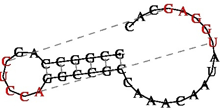

Repeats, Secondary Structure & Melting Temperature
Repeats, Secondary Structure
DNA often contains reiterated sequences of differing length. These include direct (e.g. GAAT-N6-GAAT) and inverted (GAAT-N6-ATTC) repeats. The later, if sufficiently close may form stable stem-loop structures. For secondary structures of RNA or DNA I recommend most highly Michael Zuker’s sites:
- For RNA folding use MFold (Michael Zuker, Rensselaer Polytechnic Institute, U.S.A.). N.B. The data can be presented in a number of graphic formats. For DNA sequences use this site.
- Vienna RNA secondary structure prediction (University of Vienna, Austria). I have found this site useful for drawing tRNAs in cloverleaf format.
- Vfold - a collection of servers for RNA structure and folding thermodynamics prediction
(Reference: X. Xu et al. 2014. PLoS One 9(9): e107504). - pKiss - is the successor of pknotsRG, the first pseudoknot class is the canonical simple recursive pseudoknot from pknotsRG. The new class are canonical simple recursive kissing hairpins.
(Reference: Janssen, S. & Giegerich, R. Bioinformatics, 2015; 31(3):423-5). - ProbKnot - this server takes a sequence file of nucleic acids, either DNA or RNA, and predicts the presence of pseudoknots in its folded configuration. Note that increasing the number of calculation iterations may be helpful in increasing accuracy. Note also that if a pseudoknot-containing structure is predicted, it will be displayed as a circular structure. If the predicted structure does not contain pseudoknots, it will be displayed as a radial structure.
- antaRNA – multi-objective inverse folding of pseudoknot RNA using ant-colony optimization
(Reference: Kleinkauf R et al. (2015) BMC Bioinformatics 16: Article number: 389). - vsfold5 (Chiba Institute of Technology, Japan) - RNA Pseudoknot Prediction Server
- KineFold Web Server - RNA/DNA folding predictions including pseudoknots and entangled helices
(Reference: A. Xayaphoummine et al. Nucleic Acid Res. 33: 605-610 (2005)). - IPknot - IP-based prediction of RNA pseudoKNOTs - rovides services for predicting RNA secondary structures including a wide class of pseudoknots. IPknot can also predict the consensus secondary structure when a multiple alignment of RNA sequences is given.
(Reference: K. Sato et al. (2011) Bioinformatics, 27: i85-i93). - REPuter - fast computation of maximal repeats in complete genomes (S. Kurtz & C. Scheiermacher @ Universitat Bielefeld, Germany) - interesting graphical representation of repeats.
- REPFIND - on sequences of less than 20kb it provides graphical and statistical analysis on direct repeats
(Reference: Betley JN et al. (2002) Current Biology, 12: 1756-1761). - einverted palindrome and equicktandem - (EMBOSS) - find inverted and tandem repeats
- Repeats Finder for DNA/Protein Sequences (NovoPro)
- Tandem Repeats Finder - offers three options from basic to advanced
(Reference: G. Benson (1999). Nucleic Acids Res 27: 573-580). - RepEx - is a web server to extract sequence repeats from protein and DNA sequences
(Reference: Michael D et al. (2019) Comp Biol Chem 78: 424-430). - Palindrome analyser - is a web-based server for predicting and evaluating inverted repeats in nucleotide sequences.
(Reference: Brázda V et al. (2016) Biochem Bioph Res Co, 478: 1739-1745). N.B. Requires regristration. - G4Hunter - is a powerful and widely used tool for G4 prediction which takes into account G-richness and G-skewness of a DNA or RNA sequence and provides a quadruplex propensity score.
(Reference: Brázda V et al. (2019) Bioinformatics 35: 3493–3495). N.B. Requires regristration. - Dfam - is a database of Repetitive DNA element sequence alignments and consensus sequence models. This open database provides family consensus models in a format that is compatible with an wide-variety of bioinformatics tools while facilitating the transition to Dfam style profile HMMs.
(Reference: R. Hubley et al. Nucleic Acids Research (2016) Database Issue 44: D81-89) - CRISPRCasFinder - Clustered Regularly Interspaced Short Palindromic Repeats (CRISPR) present a curious repeat structure found in many prokaryotic genomes. The program includes: (i) an improved CRISPR array detection tool facilitating expert validation based on a rating system, (ii) prediction of CRISPR orientation and (iii) a Cas protein detection and typing tool updated to match the latest classification scheme of these systems.
(Reference: Couvin D. et al. 2018. Nucl. Acids Res. 46(Web Server issue): W52-W57).
If you have metagenomic data use CRISPRCasMeta. Search the CRISPRCasdb for sequences homologous to the CRISPR repeats and spacers here.
GCGGCCAGCUCCAGGCCGCCAAACAAUAUGGAGCAC
((((((..[[[[[)))))).........]]]]]...

For those with a fuller knowledge of DNA secondary structure you might want to visit Pázmány Péter Catholic University, The Faculty of Bionics and Information Technologies (Hungary) for:
- bend.it and plot.it
- model-it - (K. Vlahovicek & S. Pongor) produces incredible pictures of DNA using a variety of parameters. Right click on screen to download the picture, which may not be visible. N.B. you will require Rasmol to visualize the results (*.pdb file).
- MUTACURVE - predicts the extent of DNA curvature. Enter your sequence in the following area, in FASTA format or as plain sequence (at least 60 and up to 1400 bases).
(Reference: De la Cruz MA et al. 2009. Microbiology. 155: 2127-2136). - GBshape (A Genome Browser database for DNA shape annotations) - DNA shape analysis has been established in recent years as an approach that reveals protein- DNA binding specificity determinants beyond nucleotide sequence. GBshape provides DNA shape annotations of entire genomes: annotations for minor groove width (MGW), propeller twist (ProT), Roll, helix twist (HelT), and hydroxyl radical cleavage (ORChID2). GBshape contains two major tools, a Genome Browser and a Table Browser. The Genome Browser provides a graphical representation of DNA shape annotations along standard genome browser annotations. The Table Browser enables the data manipulation, downloads, and basic statistical analyses. The DNA shape annotations were derived with a high-throughput method for DNA shape predictions (DNAshape) and constitute the whole-genome complement to a motif database of transcription factor binding sites (TFBSshape).
(Reference: T.P. Chiu et al. 2015. Nucleic Acids Res. 43: D103-109).
Melting Temperature
Knowing the melting temperature of a fragment of DNA or of an oligonucleotide is invaluable in the determining optimal conditions for carrying out hybridizations. All of the PCR design sites will provide information on oligonucleotides the following will accommodate longer sequences:
- uMELT - is a flexible web-based tool for predicting DNA melting curves and denaturation profiles of PCR products. The user defines an amplicon sequence and chooses a set of thermodynamic and experimental parameters that include nearest neighbor stacking energies, loop entropy effects, cation (monovalent and Mg++) concentrations and a temperature range. Using an accelerated partition function algorithm along with chosen parameter values, uMelt interactively calculates and visualizes the mean helicity and the dissociation probability at each sequence position at temperatures within the temperature range.
(Reference: Z. Dwight et al. Bioinformatics, 27 (7): 1019–1020) - DAN (EMBOSS) - choose under Nucleic Composition. provides one with a plot (in postscript).
- Homodimer simulations - This simulation considers both the folding and dimerization of one single-stranded DNA or RNA molecule.
(Reference: N.R. Markham & M. Zuker 2005. Nucl. Acids Res. 33: W577-W581).
IRES (Internal Ribosome Entry Site) segments are known to attract eukaryotic ribosomal translation initiation complex and thus promote translation initiation independently of the presence of the commonly utilized 5'-terminal 7mG cap structure. It is not yet clear whether the activity could be attributed to a common sequence or to a common secondary structure present in them. Such IRES regions were found in a broad range of +RNA viruses and in the untranslated regions of some eukaryotic cellular mRNAs. Database 1; Database 2
- IRESpy - is a fast, reliable, high-throughput IRES online prediction tool. It provides a publicly available tool for all IRES researchers, and can be used in other genomics applications such as gene annotation and analysis of differential gene expression.
(Reference: Wang J & Gribskov (2019) BMC Bioinformatics 20: 409). - IRESPred - is developed for prediction of both viral and cellular IRES using Support Vector Machine (SVM). The predictive model was built using 35 features that are based on sequence and structural properties of UTRs and the probabilities of interactions between UTR and small subunit ribosomal proteins (SSRPs). The model was found to have 75.51% accuracy, 75.75% sensitivity, 75.25% specificity, and 75.75% precision.
(Reference: Kolekar P et al. (2016) Sci Rep. 6: 27436). - IRESbase is a comprehensive database of experimentally verified viral and eukaryotic internal ribosome entry sites (IRESs) with BLAST search capacity
(Reference: Wu TY et al. (2009) BMC Bioinformatics 10: 160).
Updated: December, 2025